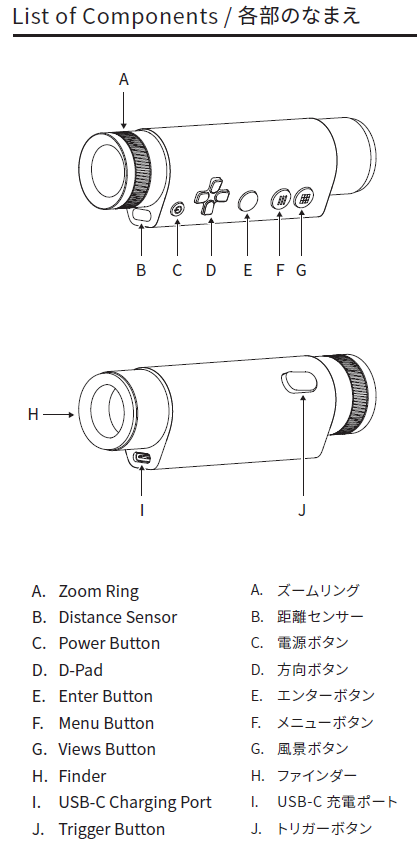

概要
Atmoph Window Yo SDK for Unity は、Atmoph Window Yoで動作するUnityアプリを作成するための Software Development Kit です。Atmoph Window YoはAndroidベースのOSで動作していますので、Android用アプリが動作します。SDKではAtmoph Window Yo特有の機能をアプリでサポートするためのフレームワークを提供します。
機能一覧
SDK経由でサポートが可能になる主な機能は次のものになります。
Scopeをゲームコントローラとして使用
Yoの望遠鏡型コントローラー Scope の次の入出力をUnityアプリで扱えるようになります。
- Scopeのボタン操作の検知
- Scopeのズームリング操作の検知
- Scopeのポインティング位置、向き、距離センター値の取得
- Scopeの動的情報の取得（接続状態、アドレス、バッテリー残量）
- Scopeの静的情報の取得(本体型番、シリアルナンバー、FWバージョン、PnPID)
- Scopeへの振動指示
本体に対する操作
Scopeの各部の名称
